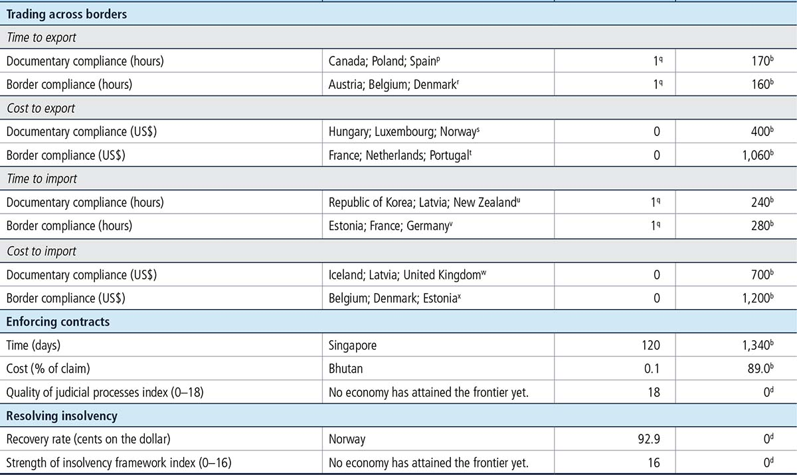

FIGURE 14.1 How are distance to frontier scores calculated for indicators? Two examples

Source: Doing Business database.
The Doing Business report presents results for two aggregate measures: the distance to frontier score and the ease of doing business ranking, which is based on the distance to frontier score. The ease of doing business ranking compares economies with one another; the distance to frontier score benchmarks economies with respect to regulatory best practice, showing the absolute distance to the best performance on each Doing Business indicator. When compared across years, the distance to frontier score shows how much the regulatory environment for local entrepreneurs in an economy has changed over time in absolute terms, while the ease of doing business ranking can show only how much the regulatory environment has changed relative to that in other economies.
The distance to frontier score captures the gap between an economy’s performance and a measure of best practice across the entire sample of 41 indicators for 10 Doing Business topics (the labor market regulation indicators are excluded). For starting a business, for example, New Zealand has the smallest number of procedures required (1) and the shortest time to fulfill them (0.5 days). Slovenia has the lowest cost (0.0), and Australia, Colombia and 111 other economies have no paid-in minimum capital requirement (table 14.1).
TABLE 14.1 What is the frontier in regulatory practice?

Source: Doing Business database.
a. Worst performance is defined as the 99th percentile among all economies in the Doing Business sample.
b. Worst performance is defined as the 95th percentile among all economies in the Doing Business sample.
c. Another 111 economies also have a paid-in minimum capital requirement of 0.
d. Worst performance is the worst value recorded.
e. In 14 other economies it also takes only 3 procedures to get an electricity connection.
f. Another 23 economies also have a score of 8 on the reliability of supply and transparency of tariffs index.
g. Another 28 economies also have a score of 8 on the depth of credit information index.
h. Another 10 economies also have a score of 10 on the extent of disclosure index.
i. Another 4 economies also have a score of 10 on the extent of shareholder rights index.
j. Defined as the lowest time recorded among all economies in the Doing Business sample that levy the three major taxes: profit tax, labor taxes and mandatory contributions, and VAT or sales tax.
k. Another 31 economies also have a total tax rate equal to or lower than 26.1% of profit.
l. Defined as the highest total tax rate among the 15% of economies with the lowest total tax rate in the Doing Business sample for all years included in the analysis up to and including Doing Business 2015.
m. Another 7 economies also have a compliance time for VAT refund of 0 hours.
n. Another 3 economies also have a compliance time for corporate income tax audit of 1.5 hours.
o. Another 104 economies also have a completion time for corporate income tax audit of 0 weeks.
p. Another 22 economies also have a documentary compliance time to export of no more than 1 hour.
q. Defined as 1 hour even though in many economies the time is less than that.
r. Another 15 economies also have a border compliance time to export of no more than 1 hour.
s. Another 16 economies also have a documentary compliance cost to export of 0.00.
t. Another 15 economies also have a border compliance cost to export of 0.00.
u. Another 26 economies also have a documentary compliance time to import of no more than 1 hour.
v. Another 22 economies also have a border compliance time to import of no more than 1 hour.
w. Another 27 economies also have a documentary compliance cost to import of 0.00.
x. Another 25 economies also have a border compliance cost to import of 0.00.
Calculating the distance to frontier score for each economy involves two main steps. In the first step individual component indicators are normalized to a common unit where each of the 41 component indicators y (except for the total tax rate) is rescaled using the linear transformation (worst–y)/(worst–frontier). In this formulation the frontier represents the best performance on the indicator across all economies since 2005 or the third year in which data for the indicator were collected. Both the best performance and the worst performance are established every five years based on the Doing Business data for the year in which they are established, and remain at that level for the five years regardless of any changes in data in interim years. Thus an economy may set the frontier for an indicator even though it is no longer at the frontier in a subsequent year.
For scores such as those on the strength of legal rights index or the quality of land administration index, the frontier is set at the highest possible value. For the total tax rate, consistent with the use of a threshold in calculating the rankings on this indicator, the frontier is defined as the total tax rate at the 15th percentile of the overall distribution for all years included in the analysis up to and including Doing Business 2015. For the time to pay taxes the frontier is defined as the lowest time recorded among all economies that levy the three major taxes: profit tax, labor taxes and mandatory contributions, and value added tax (VAT) or sales tax. For the different times to trade across borders, the frontier is defined as 1 hour even though in many economies the time is less than that.
In the same formulation, to mitigate the effects of extreme outliers in the distributions of the rescaled data for most component indicators (very few economies need 700 days to complete the procedures to start a business, but many need 9 days), the worst performance is calculated after the removal of outliers. The definition of outliers is based on the distribution for each component indicator. To simplify the process two rules were defined: the 95th percentile is used for the indicators with the most dispersed distributions (including minimum capital, number of payments to pay taxes, and the time and cost indicators), and the 99th percentile is used for the number of procedures. No outlier is removed for component indicators bound by definition or construction, including legal index scores (such as the depth of credit information index, extent of conflict of interest regulation index and strength of insolvency framework index) and the recovery rate (figure 14.1).
FIGURE 14.1 How are distance to frontier scores calculated for indicators? Two examples
Source: Doing Business database.
In the second step for calculating the distance to frontier score, the scores obtained for individual indicators for each economy are aggregated through simple averaging into one distance to frontier score, first for each topic and then across all 10 topics: starting a business, dealing with construction permits, getting electricity, registering property, getting credit, protecting minority investors, paying taxes, trading across borders, enforcing contracts and resolving insolvency. More complex aggregation methods—such as principal components and unobserved components—yield a ranking nearly identical to the simple average used by Doing Business.1 Thus Doing Business uses the simplest method: weighting all topics equally and, within each topic, giving equal weight to each of the topic components.2
An economy’s distance to frontier score is indicated on a scale from 0 to 100, where 0 represents the worst performance and 100 the frontier. All distance to frontier calculations are based on a maximum of five decimals. However, indicator ranking calculations and the ease of doing business ranking calculations are based on two decimals.
The difference between an economy’s distance to frontier score in any previous year and its score in 2016 illustrates the extent to which the economy has closed the gap to the regulatory frontier over time. And in any given year the score measures how far an economy is from the best performance at that time.
The total tax rate component of the paying taxes indicator set enters the distance to frontier calculation in a different way than any other indicator. The distance to frontier score obtained for the total tax rate is transformed in a nonlinear fashion before it enters the distance to frontier score for paying taxes. As a result of the nonlinear transformation, an increase in the total tax rate has a smaller impact on the distance to frontier score for the total tax rate—and therefore on the distance to frontier score for paying taxes—for economies with a below-average total tax rate than it would have had before this approach was adopted in Doing Business 2015 (line B is smaller than line A in figure 14.2). And for economies with an extreme total tax rate (a rate that is very high relative to the average), an increase has a greater impact on both these distance to frontier scores than it would have had before (line D is bigger than line C in figure 14.2).
FIGURE 14.2 How the nonlinear transformation affects the distance to frontier score for the total tax rate
Source: Doing Business database.
Note: The nonlinear distance to frontier score for the total tax rate is equal to the distance to frontier score for the total tax rate to the power of 0.8.
The nonlinear transformation is not based on any economic theory of an “optimal tax rate” that minimizes distortions or maximizes efficiency in an economy’s overall tax system. Instead, it is mainly empirical in nature. The nonlinear transformation along with the threshold reduces the bias in the indicator toward economies that do not need to levy significant taxes on companies like the Doing Business standardized case study company because they raise public revenue in other ways—for example, through taxes on foreign companies, through taxes on sectors other than manufacturing or from natural resources (all of which are outside the scope of the methodology). In addition, it acknowledges the need of economies to collect taxes from firms.
For each of the 11 economies in which Doing Business collects data for the second largest business city as well as the largest one, the distance to frontier score is calculated as the population-weighted average of the distance to frontier scores for these two cities (table 14.2). This is done for the aggregate score, the scores for each topic and the scores for all the component indicators for each topic.
TABLE 14.2 Weights used in calculating the distance to frontier scores for economies with two cities covered
Economy |
City |
Weight (%) |
Bangladesh |
Dhaka |
78 |
Chittagong |
22 |
|
Brazil |
São Paulo |
61 |
Rio de Janeiro |
39 |
|
China |
Shanghai |
55 |
Beijing |
45 |
|
India |
Mumbai |
47 |
Delhi |
53 |
|
Indonesia |
Jakarta |
78 |
Surabaya |
22 |
|
Japan |
Tokyo |
65 |
Osaka |
35 |
|
Mexico |
Mexico City |
83 |
Monterrey |
17 |
|
Nigeria |
Lagos |
77 |
Kano |
23 |
|
Pakistan |
Karachi |
65 |
Lahore |
35 |
|
Russian Federation |
Moscow |
70 |
St. Petersburg |
30 |
|
United States |
New York City |
60 |
Los Angeles |
40 |
Source: United Nations, Department of Economic and Social Affairs, Population Division, World Urbanization Prospects, 2014 Revision, “File 12: Population of Urban Agglomerations with 300,000 Inhabitants or More in 2014, by Country, 1950–2030 (thousands),” http://esa.un.org/unpd/wup/CD-ROM/Default.aspx.
Each indicator set measures a different aspect of the business regulatory environment. The distance to frontier scores and associated rankings of an economy can vary, sometimes significantly, across indicator sets. The average correlation coefficient between the 10 indicator sets included in the aggregate distance to frontier score is 0.48, and the coefficients between 2 sets of indicators range from 0.32 (between getting credit and paying taxes) to 0.61 (between registering property and enforcing contracts). These correlations suggest that economies rarely score universally well or universally badly on the indicators (table 14.3).
TABLE 14.3 Correlations between economy distance to frontier scores for Doing Business topics
Source: Doing Business database.
Consider the example of Portugal. Its aggregate distance to frontier score is 77.40. Its score is 92.85 for starting a business and 100.00 for trading across borders. But its score is only 56.67 for protecting minority investors and 45.00 for getting credit.
Figure 2.1 in the chapter “About Doing Business” illustrates the degree of variability for each economy’s performance across the different areas of business regulation covered by Doing Business. The figure draws attention to economies with a particularly uneven performance by showing, for each economy, the distance between the average of its highest three distance to frontier scores and the average of its lowest three across the 10 topics included in this year’s aggregate distance to frontier score. While a relatively small distance between these two averages suggests a broadly consistent approach across the areas of business regulation measured by Doing Business, a relatively large distance suggests a more uneven approach, with greater room for improvements in some areas than in others.
Variation in performance across the indicator sets is not at all unusual. It reflects differences in the degree of priority that government authorities give to particular areas of business regulation reform and in the ability of different government agencies to deliver tangible results in their area of responsibility.
Doing Business 2017 uses a simple method to calculate which economies improved the ease of doing business the most. First, it selects the economies that in 2015/16 implemented regulatory reforms making it easier to do business in 3 or more of the 10 topics included in this year’s aggregate distance to frontier score.3 Twenty-nine economies meet this criterion: Algeria; Azerbaijan; Bahrain; Belarus; Brazil; Brunei Darussalam; Burkina Faso; Côte d’Ivoire; Georgia; India; Indonesia; Kazakhstan; Kenya; Madagascar; Mali; Mauritania; Morocco; Niger; Pakistan; Poland; Senegal; Serbia; Singapore; Thailand; Togo; Uganda; the United Arab Emirates; Uzbekistan and Vanuatu. Second, Doing Business sorts these economies on the increase in their distance to frontier score from the previous year using comparable data.
Selecting the economies that implemented regulatory reforms in at least three topics and had the biggest improvements in their distance to frontier scores is intended to highlight economies with ongoing, broad-based reform programs. The improvement in the distance to frontier score is used to identify the top improvers because this allows a focus on the absolute improvement—in contrast with the relative improvement shown by a change in rankings—that economies have made in their regulatory environment for business.
The ease of doing business ranking ranges from 1 to 190. The ranking of economies is determined by sorting the aggregate distance to frontier scores, rounded to two decimals.
1. See Djankov, Manraj and others (2005). Principal components and unobserved components methods yield a ranking nearly identical to that from the simple average method because both these methods assign roughly equal weights to the topics, since the pairwise correlations among indicators do not differ much. An alternative to the simple average method is to give different weights to the topics, depending on which are considered of more or less importance in the context of a specific economy.
2. For getting credit, indicators are weighted proportionally, according to their contribution to the total score, with a weight of 60% assigned to the strength of legal rights index and 40% to the depth of credit information index. Indicators for all other topics are assigned equal weights.
3. Changes making it more difficult to do business are subtracted from the total number of those making it easier to do business.